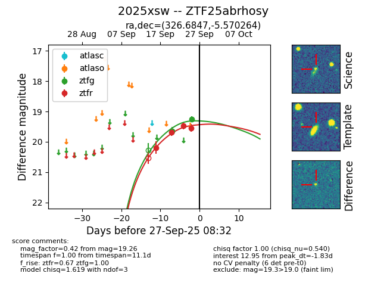
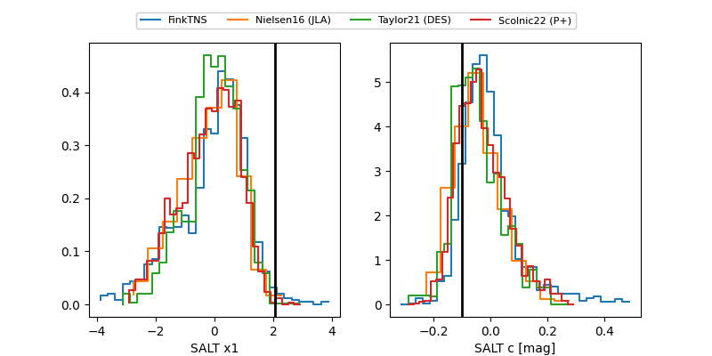

FINK: ZTF25abrhosy
Lasair: ZTF25abrhosy
ALeRCE: ZTF25abrhosy
TNS: 2025xsw
YSE: 2025xsw
ZTF25abrhosy (ztf,fink)
2025xsw (tns,yse)
equatorial (ra, dec) = (326.6847,-5.57026)
galactic (l, b) = (50.5387,-41.11953)


last ztfg=19.26, ztfr=19.54
2 ztfg, 4 ztfr detections